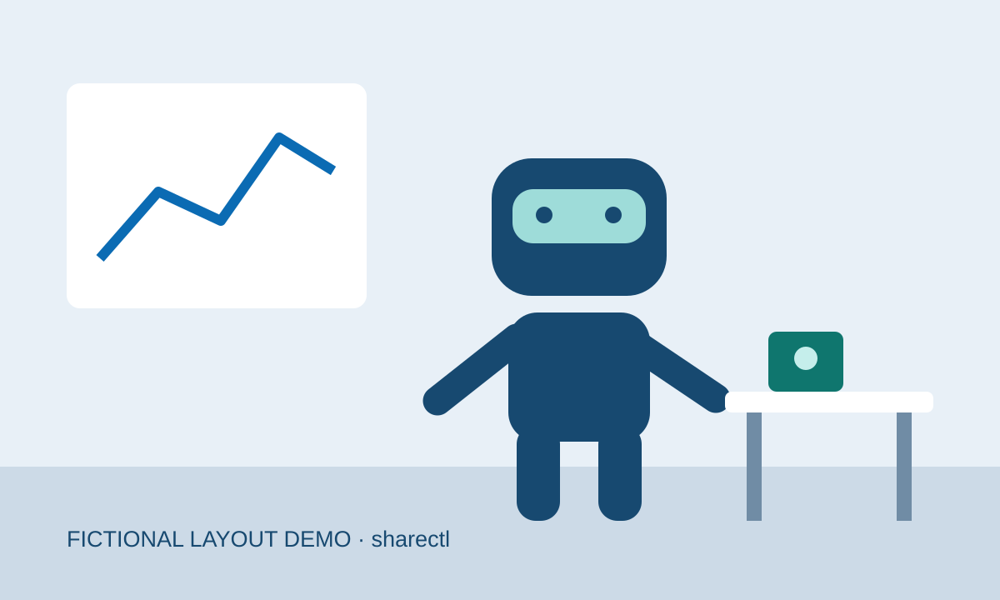

Fiktiv nyhet · Teknik
Testlabbet provar roboten i en ny miljö
I denna påhittade nyhet flyttar ett fiktivt forskarlag sin robot från ett testbord till ett nytt rum. Exemplet visar hur en kort sammanfattning kan bevara reservationen: ett lyckat försök är ännu ingen generell lösning.
One demonstration does not establish general reliability.
Fiktivt originalcitat · Exempellabbet
Redaktionen Läs noga
Varför det spelar roll: Exemplet visar skillnaden mellan en demonstration och en bredare slutsats.
Faktakoll: Allt innehåll i denna demo är fiktivt. Ingen faktisk robotprestanda redovisas.
Hänger ihop med: Den fiktiva sensorn
ELExempellabbet · Fiktiv källa16 okt 2026 · fre 09:00 · Exempeltid